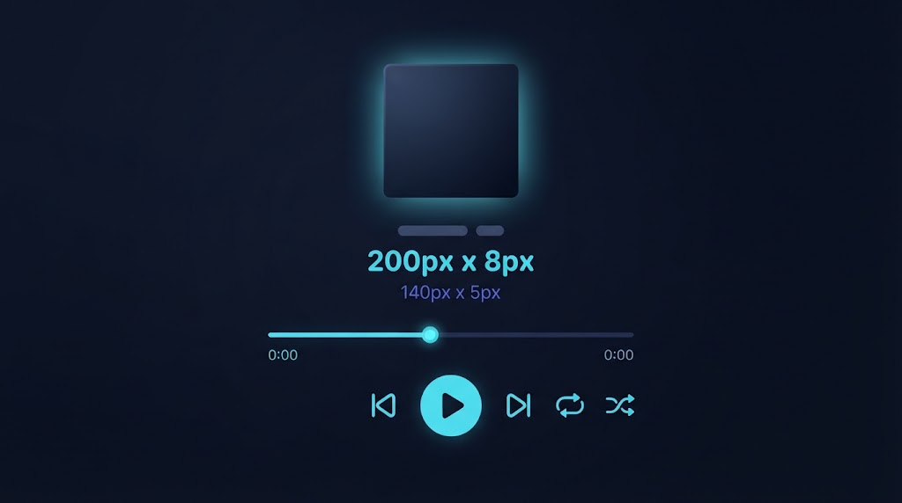

خیلی از کاربران وقتی میگویند «میخواهم اسم کاور آهنگ را عوض کنم»، منظورشان همان متنی است که پلیر موزیک زیر یا کنار عکس کاور نشان میدهد — یعنی نام آلبوم. این متن از یک تگ مستقل بهنام Album میآید، کاملاً جدا از خود عکس. در این راهنما ویرایش همین تگ را با ابزار رایگان موزیک متانما قدمبهقدم نشان میدهیم.
چرا «اسم کاور» با «آلبوم» قاطی میشود؟
در اکثر پلیرهای موزیک، عکس کاور و نام آلبوم همیشه کنار هم نمایش داده میشوند — گاهی متن نام آلبوم درست روی خود تصویر یا زیرش قرار میگیرد. به همین دلیل خیلی از کاربران این دو را یک چیز واحد فرض میکنند، در حالی که در ساختار تگ ID3 کاملاً دو فریم جدا هستند: TALB برای متن نام آلبوم و APIC برای خود تصویر.
تگ Album دقیقاً چه کاربردی دارد؟
تگ Album برای گروهبندی آهنگها استفاده میشود. وقتی چند آهنگ همه یک نام آلبوم یکسان داشته باشند، اکثر پلیرها (مثل اپل موزیک، اندروید موزیک پلیر، فوبار۲۰۰۰) آنها را زیر یک کاور و یک عنوان مشترک نمایش میدهند — حتی اگر فایلها در پوشههای مختلف باشند.
فیلد «آلبوم» در تب ویرایش ابزار موزیک متانما، دقیقاً همین متن را کنترل میکند.
آموزش گامبهگام
- فایل MP3 را در ابزار موزیک متانما بارگذاری کنید.
- به تب «ویرایش فیلدها» بروید.
- در فیلد «آلبوم»، نام درست را وارد کنید.
- اگر میخواهید سال انتشار یا ژانر را هم اصلاح کنید، همینجا انجام دهید.
- روی «اعمال تغییرات و دانلود» بزنید.

اگر خود عکس کاور را هم میخواهم عوض کنم؟
تغییر متن آلبوم و تعویض خود تصویر کاور دو کار جدا هستند، اما میتوانید همزمان هر دو را در یک مرحله انجام دهید: در همان فرم ویرایش، بخش «عکس کاور» هم وجود دارد. برای توضیح کامل این بخش، به راهنمای اختصاصی تعویض عکس کاور آهنگ سر بزنید.
این تغییر در کدام پلیرها دیده میشود؟
چون این تغییر مستقیم داخل خود فایل ذخیره میشود (نه در یک سرویس آنلاین یا کتابخانهی موقت)، در هر پلیری که فایل را باز کنید نمایش داده میشود: موزیک پلیر پیشفرض اندروید و iOS، اپلیکیشنهای دسکتاپ مثل فوبار۲۰۰۰ یا VLC، و حتی سیستمعامل ویندوز هنگام نمایش جزئیات فایل.
چرا نام آلبوم درست، بیشتر از یک جزئیات ظاهری است؟
نام آلبوم فقط یک برچسب تزئینی نیست — نقش سازماندهی واقعی دارد. اکثر پلیرهای موزیک، آهنگها را بر اساس همین فیلد در «نمای آلبوم» گروهبندی میکنند. اگر ده آهنگ از یک آلبوم را دارید ولی نام آلبوم در هرکدام کمی متفاوت نوشته شده (مثلاً یکی «Ashiyane» و دیگری «Ashiyane Album»)، پلیر آنها را بهعنوان دو آلبوم جدا میبیند و کاور و ترتیب آهنگها بههم میریزد. برای همین، اگر میخواهید یک کتابخانهی موزیک منظم داشته باشید، هماهنگکردن دقیق این فیلد بین همهی فایلهای یک آلبوم اهمیت زیادی دارد.
تفاوت «خواننده» با «هنرمند آلبوم»
در استانداردهای پیشرفتهتر تگگذاری، گاهی دو فیلد جدا برای هنرمند وجود دارد: یکی «خوانندهی این آهنگ مشخص» (Artist) و دیگری «هنرمند اصلی آلبوم» (Album Artist) — که برای آلبومهای گروهی یا کالکشنهای چندخواننده کاربرد دارد (مثلاً یک آلبوم که هر آهنگش را یک خوانندهی مهمان خوانده، اما همه زیر نام یک پروژهی مشترک منتشر شدهاند). ابزار موزیک متانما در نسخهی فعلی روی فیلد اصلی «خواننده» تمرکز دارد که برای اکثر کاربردهای روزمره کافی و رایجترین حالت است.
اشتباهات رایج هنگام نوشتن نام آلبوم
- اضافهکردن سال یا کیفیت در نام آلبوم: نوشتن چیزی مثل «Album Name (2024) [320kbps]» باعث میشود پلیر نتواند این فایل را با نسخههای دیگر همان آلبوم یکی تشخیص دهد. سال انتشار فیلد جداگانهای دارد؛ بهتر است در همانجا وارد شود.
- فاصله یا نویسههای نامرئی اضافی: گاهی هنگام کپیکردن نام آلبوم از یک منبع آنلاین، یک فاصلهی نامرئی اضافه هم کپی میشود که باعث میشود پلیر آن را با نگارش «تمیز» همان اسم متفاوت ببیند. اگر بعد از ویرایش هنوز آهنگها جدا نمایش داده میشوند، بهتر است نام آلبوم را کامل پاک و از نو تایپ کنید.
- ناهماهنگی حروف بزرگ و کوچک در نامهای انگلیسی: برخی پلیرها به بزرگی و کوچکی حروف حساس هستند؛ سعی کنید یک الگوی ثابت (مثلاً حرف اول هر کلمه بزرگ) را برای همهی آهنگهای یک آلبوم رعایت کنید.
تکآهنگها چطور؟ آیا آنها هم نام آلبوم لازم دارند؟
برای تکآهنگهایی (Single) که بخشی از یک آلبوم رسمی نیستند، رایجترین روش این است که نام خود آهنگ را در فیلد آلبوم هم تکرار کنید، یا این فیلد را کاملاً خالی بگذارید. هر دو روش قابل قبول است؛ فقط توجه داشته باشید که برخی پلیرها آهنگهایی بدون نام آلبوم را زیر یک دستهی عمومی بهنام «Unknown Album» یا مشابه آن گروهبندی میکنند. اگر میخواهید از این حالت جلوگیری کنید، واردکردن نام آهنگ بهعنوان نام آلبوم، سادهترین راهحل است.
این روش برای پادکست یا کتاب صوتی هم کاربرد دارد؟
بله. اگر فایلهای صوتی MP3 برای پادکست یا کتاب صوتی تولید میکنید، همان فیلد «آلبوم» را میتوانید برای نام مجموعه یا فصل استفاده کنید (مثلاً نام پادکست بهعنوان آلبوم، و شمارهی قسمت در فیلد عنوان). این کار باعث میشود پلیرهای پادکست و موزیک، قسمتهای یک مجموعه را بهدرستی کنار هم نمایش دهند، دقیقاً مثل آهنگهای یک آلبوم موسیقی.
اهمیت فیلدهای سال و ژانر در کنار نام آلبوم
وقتی نام آلبوم را اصلاح میکنید، فرصت خوبی است که فیلدهای «سال انتشار» و «ژانر» را هم بررسی و در صورت نیاز تصحیح کنید — چون این سه فیلد معمولاً با هم دیده و استفاده میشوند. سال انتشار به پلیرها کمک میکند آهنگها را بهترتیب زمانی مرتب کنند، و ژانر برای دستهبندی خودکار پلیلیستها (مثلاً «پاپ» یا «سنتی») به کار میرود. اگر این سه فیلد را هماهنگ و دقیق نگه دارید، کتابخانهی موزیک شما در بلندمدت مرتبتر و قابلجستوجوتر میماند.
آلبومهای ترکیبی و پلیلیستهای شخصی
اگر یک پلیلیست شخصی از آهنگهای مختلف خوانندهها ساختهاید و میخواهید آنها را زیر یک نام واحد (مثلاً «پلیلیست رانندگی من») در پلیر ببینید، میتوانید همان نام را در فیلد آلبوم همهی این فایلها وارد کنید. این کار باعث میشود پلیر همهی این آهنگهای ناهمگون را، فارغ از خواننده یا آلبوم اصلیشان، زیر یک نام مشترک گروهبندی و در کنار هم نمایش دهد — یک ترفند ساده برای سازماندهی شخصی کتابخانهی موزیک، فراتر از کاربرد اصلی و رسمی این فیلد.
یک مثال کامل، از ابتدا تا انتها
برای درک بهتر، یک سناریوی کامل را مرور میکنیم. فرض کنید ۸ آهنگ از یک آلبوم قدیمی دارید که هرکدام نام آلبوم متفاوتی ثبت شده (بعضی «Album»، بعضی «album name»، بعضی بدون نام):
- هر فایل را بهترتیب در ابزار موزیک متانما بارگذاری میکنید.
- در تب «خلاصه»، نام آلبوم فعلی هر فایل را میبینید.
- به تب «ویرایش فیلدها» میروید و نام دقیق و یکسانی (مثلاً «نام آلبوم درست») را برای همه وارد میکنید.
- فایل خروجی را دانلود و جایگزین فایل قدیمی در کتابخانهی موزیک میکنید.
بعد از این فرآیند، پلیر موزیک شما همهی ۸ آهنگ را زیر یک آلبوم واحد، با یک کاور مشترک و ترتیب درست نمایش میدهد.
آلبومهای مشترک با چند خواننده
گاهی یک آلبوم واحد شامل آهنگهایی از چند خوانندهی مختلف است — مثلاً یک آلبوم موسیقی فیلم یا یک کالکشن مناسبتی. در این حالت، بهتر است نام آلبوم برای همهی فایلها دقیقاً یکسان نوشته شود (مثلاً «موسیقی متن فیلم X»)، در حالی که فیلد «خواننده» برای هر فایل، نام همان خوانندهی مشخص آن آهنگ را نشان میدهد. این ترکیب به پلیر اجازه میدهد همهی آهنگها را زیر یک آلبوم مشترک گروهبندی کند، اما همچنان خوانندهی درست هر قطعه را هم نشان دهد.
کیفیت تصویر کاور و ارتباطش با نام آلبوم
وقتی نام آلبوم را اصلاح میکنید، این فرصت خوبی است که به کیفیت عکس کاور هم توجه کنید. یک نام آلبوم دقیق و درست، کنار یک عکس کاور کمکیفیت یا فاقد کاور، همچنان تجربهی ناقصی برای شنونده میسازد. برای هماهنگکردن کامل این دو عنصر، میتوانید همزمان با ویرایش نام آلبوم، از راهنمای تعویض عکس کاور آهنگ هم استفاده کنید تا نتیجهی نهایی، هم از نظر متنی و هم بصری، حرفهای بهنظر برسد.
سوالات متداول
آیا تغییر نام آلبوم روی بقیهی آهنگهای همان آلبوم هم اثر میگذارد؟
خیر، هر فایل MP3 تگهای مستقل خودش را دارد. برای هماهنگکردن چند آهنگ، باید تکتک آنها را ویرایش کنید.
اگر فیلد آلبوم را خالی بگذارم چه میشود؟
فایل خروجی اصلاً تگ آلبوم نخواهد داشت و پلیر آن بخش را خالی نشان میدهد.
آیا امکان نوشتن نام آلبوم فارسی وجود دارد؟
بله، بدون هیچ محدودیتی، چون از رمزگذاری یونیکد استفاده میشود.
آیا نیاز به نصب نرمافزار یا اتصال دائمی اینترنت دارم؟
نه، فقط برای بازکردن اولیهی صفحه به اینترنت نیاز دارید؛ بعد از آن، پردازش کاملاً آفلاین و داخل مرورگر شما انجام میشود.
آیا این ابزار برای آلبومهای خیلی قدیمی هم کار میکند؟
بله، فرقی نمیکند فایل چند سال قدمت داشته باشد؛ تا زمانی که فرمت آن MP3 باشد، ابزار متانما بدون مشکل تگ آلبوم را میخواند و بازنویسی میکند.
آیا لازم است مرورگر خاصی استفاده کنم؟
خیر، متانما با تمام مرورگرهای مدرن (کروم، فایرفاکس، سافاری، اج) سازگار است و نیازی به نصب افزونه یا مرورگر خاصی ندارد.
جمعبندی
نام آلبوم و مشخصات مرتبط با کاور، مثل هر تگ دیگری، در چند ثانیه با ابزار رایگان موزیک متانما قابل اصلاح است — بدون نیاز به نرمافزار یا آپلود فایل در جایی.